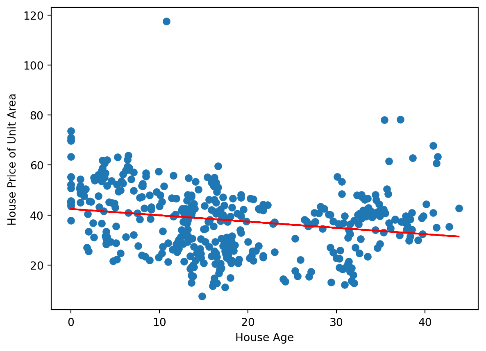

Code
import pandas as pd
import numpy as np
from sklearn.linear_model import LinearRegression
import matplotlib.pyplot as pltTiago Souza
August 23, 2022
This is my first post on Bayesian Econometrics.
| No | X1 transaction date | X2 house age | X3 distance to the nearest MRT station | X4 number of convenience stores | X5 latitude | X6 longitude | Y house price of unit area | |
|---|---|---|---|---|---|---|---|---|
| 0 | 1 | 2012.917 | 32.0 | 84.87882 | 10 | 24.98298 | 121.54024 | 37.9 |
| 1 | 2 | 2012.917 | 19.5 | 306.59470 | 9 | 24.98034 | 121.53951 | 42.2 |
| 2 | 3 | 2013.583 | 13.3 | 561.98450 | 5 | 24.98746 | 121.54391 | 47.3 |
| transaction_date | house_age | distance_mrt_station | convenience_stores | latitude | longitude | price_unit_area | intercept | |
|---|---|---|---|---|---|---|---|---|
| transaction_number | ||||||||
| 1 | 2012.917 | 32.0 | 84.87882 | 10 | 24.98298 | 121.54024 | 37.9 | 1 |
| 2 | 2012.917 | 19.5 | 306.59470 | 9 | 24.98034 | 121.53951 | 42.2 | 1 |
| 3 | 2013.583 | 13.3 | 561.98450 | 5 | 24.98746 | 121.54391 | 47.3 | 1 |
array([[ 1. , 19.5],
[ 1. , 13.3],
[ 1. , 13.3],
[ 1. , 5. ]])
---
title: "Bayesian Regression - First Assessment"
author: "Tiago Souza"
date: "2022-08-23"
categories: [econometrics, python]
#image: "image.jpg"
---
```{python}
import pandas as pd
import numpy as np
from sklearn.linear_model import LinearRegression
import matplotlib.pyplot as plt
```
This is my first post on Bayesian Econometrics.
```{python}
real_estate = pd.read_csv('Real estate.csv')
real_estate.head(3)
```
```{python}
real_estate.columns = ['transaction_number', 'transaction_date', 'house_age', 'distance_mrt_station', 'convenience_stores', 'latitude', 'longitude', 'price_unit_area']
real_estate.set_index('transaction_number', inplace = True)
real_estate['intercept'] = 1
real_estate.head(3)
```
```{python}
Y = real_estate['price_unit_area'].to_numpy().reshape(-1,1)
X_variables = ['intercept', 'house_age']
X = real_estate[X_variables].to_numpy().reshape(-1, len(X_variables))
X[1:5]
```
```{python}
ols_regression = LinearRegression(fit_intercept = False)
ols_regression.fit(X, Y)
Y_pred = ols_regression.predict(X)
plt.scatter(X[:,1], Y)
plt.plot(X[:,1], Y_pred, color='red')
plt.xlabel('House Age')
plt.ylabel('House Price of Unit Area')
plt.show()
```
```{python}
alpha_ols, beta_ols = ols_regression.coef_[0]
print(alpha_ols, beta_ols)
```